00:00:01
大家好，今天我們講明孝宗朱佑樘。
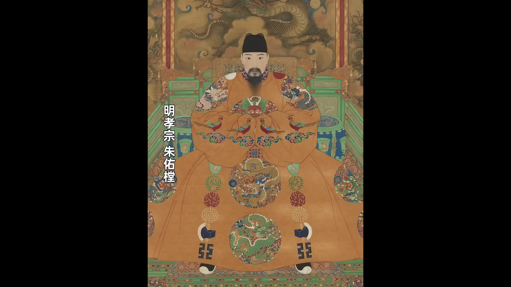
孝宗朱佑樘在位一共18年，他的年號是弘治。他在位時期被稱為「弘治中興」。『中興』對一個皇帝來說，他的廟號是孝宗，孝宗也是很高的評價。『孝』這個字在中國古代不光指孝順父母，還代表著一個人的個人品德非常好。說一個皇帝的孝道好，其實是在說這個皇帝的個人品德好，然後又稱贊他把這種好的個人品德延伸到治理國家，國家治理的也不錯。其實在中國歷史上，既能個人品德好又能治理國家治理的好的皇帝是並不多見的。更常見到的是一個皇帝他的個人品德雖然好，但是治理國家卻不行，或者說這個皇帝的個人品德好卻被別人給幹掉了，比如說朱允炆。朱允炆就是公認的個人品德好，但是被篡位了。還有一種皇帝呢，就是這個皇帝他的個人品德並不好，但是治理國家卻很有本事，比如說朱棣。
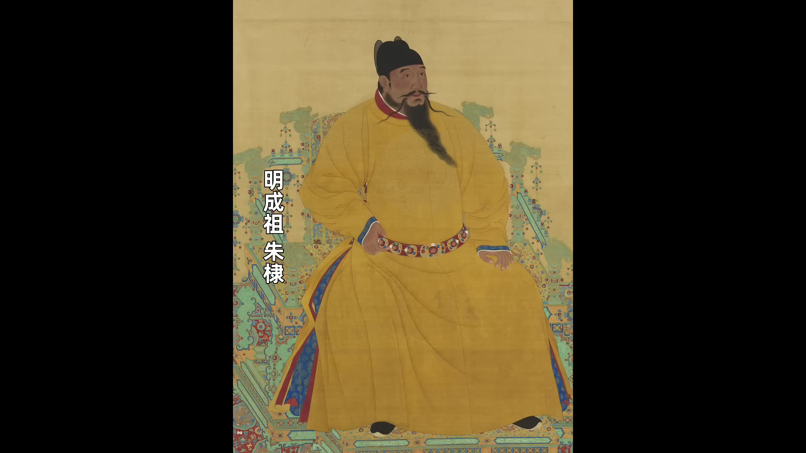
朱棣就屬於是公認的個人品德非常不好，但是國家在他手底下治理的很穩固。所以孝宗既能個人品德好，又能把國家治理的還不錯，治理成一個弘治中興，這在歷史上並不多見。
不過孝宗的這個弘治中興到底是不是名副其實的真中興，還是只是表面的中興？中興到了什麼程度？今天我們就來聊聊明孝宗的弘治中興。
講孝宗之前，我們先簡單回顧一下在他之前的明朝的情況。
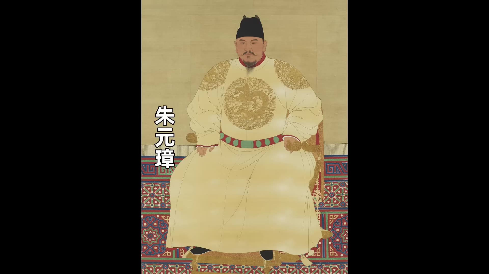
明太祖朱元璋建國之後，朱元璋雖然大殺功臣，但是他沒太擾民，所以洪武期閒明朝的國力整體在上升。明成祖朱棣篡位之後，他的花銷就比較大，老百姓的負擔也比較重。明成祖五次親征、遷都北京、鄭和下西洋等等，這都是大工程。不過他花銷雖然大，但是呢，明朝整體的國防力量還是在提升的。朱棣之後是仁宣之治。
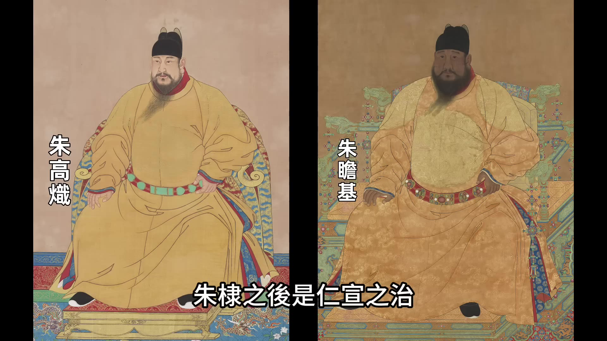
仁宣之治，明朝的國力又逐漸恢復，一直到正統年間，明朝的國力都是上升狀態。
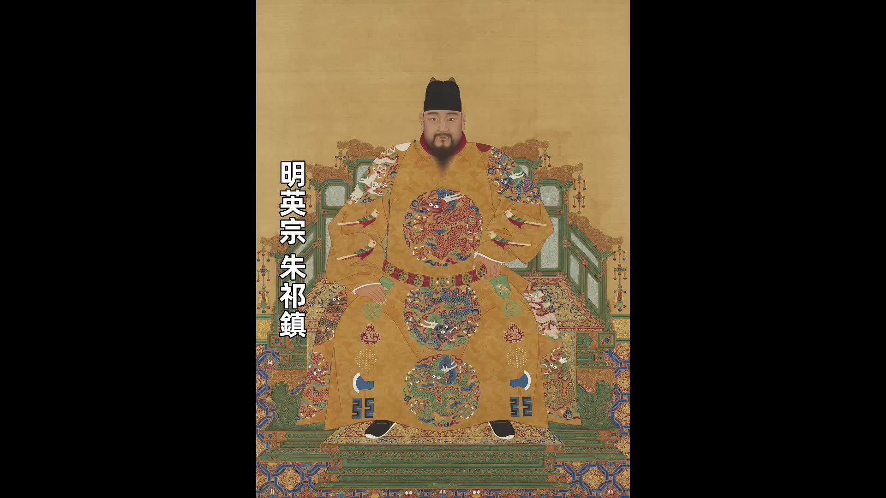
到明英宗朱祁鎮土木堡之變是一個分水嶺。其實明朝從建國開始一直到土木堡之變這七八十年，整體來看都算是治世，國力都是在上升的狀態。土木堡之變，英宗被俘虜，幾十萬大軍全軍覆沒。雖然景帝朱祁鈺在于謙等人的輔助之下保住了大明的江山，但是明朝的國力始終沒有恢復。然後就是到成化一朝，我們上期講的就是成化朝的憲宗朱見深對國家的治理漫不經心，尤其是成化後期，朝廷上士大夫的風氣整體都呈下降的趨勢。這就是孝宗朱佑樘登基之前明朝的形勢，國家的整體國力沒有恢復，朝廷上下的風氣也不好。明朝沒有太強大的外敵，他還有時間重振朝綱。
孝宗登基之後，一開始他很勤奮，在早朝之外，他又增加了一個午朝，每天兩次上朝跟大臣議事。我們都知道清朝的皇帝是很勤奮的，明朝的皇帝勤奮的並不多，明朝也就開國之初的兩個皇帝朱元璋和朱棣還比較勤奮，再往後就越來越差，尤其是明朝中後期以後，皇帝幹正事的時間就越來越少。所以孝宗能勤政，是很難得的，可能也是他覺得是他父親給他留下來的攤子實在太爛，需要好好的整頓。
成化後期朝廷的風氣確實變得很差，朝廷從上到下大臣都懶政，內閣是紙糊三閣老，六部是泥塑六尚書，其他中低級的官員甚至很多都不來上朝。我們說一下成化時期後來的情況，成化十二年九月十五號這天，負責朝廷議事的鴻臚寺官員發現上朝的官員數量明顯不足，他就派人點了下數，發現居然少了180多人。
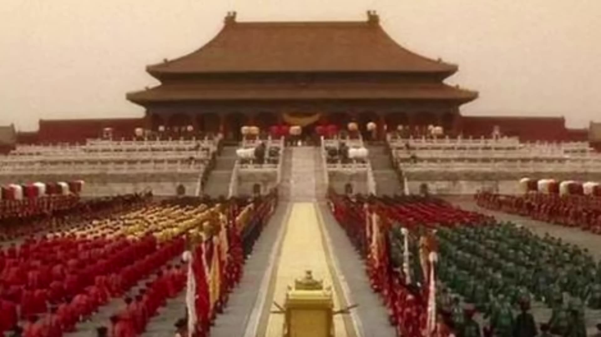
當時朝廷早朝，皇帝一般是坐在奉天殿或者坐在華蓋殿的大殿裡面，能見到皇帝的大臣都是有資格進殿的。剩下的官員都是站在從奉天門到奉天殿御道的兩邊。這些中下級的官員每天上朝很難見到皇帝。成化後期的早朝其實有點形式化，每天天沒亮皇帝和大臣就都得起床，匆匆忙忙去上朝，然後一眾官員高呼萬歲，沒什麼事就散朝。當時早朝不怎麼議政，重要的事情都是官員們回到自己的衙門辦，然後用奏折呈獻給皇帝。所以官員們對上朝就越來越松懈，以至於到成化十二年這天鴻臚寺官員居然查出來有180多個人沒上朝。
00:05:03
鴻臚寺將此情況上奏給憲宗後
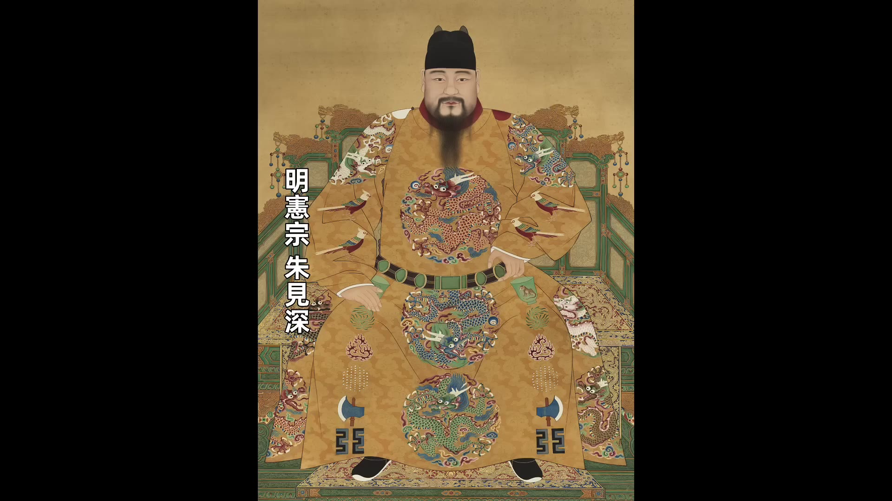
憲宗直接下令「缺朝者每人停發三個月俸糧，姑宥之」。姑宥之意為暫且原諒，僅罰三個月俸糧，此懲罰對平時依仗權勢、俸祿遠少於非法所得的官員而言毫無作用。此後不上朝者日漸增多，至成化十六年，憲宗發現上朝官員稀落，命鴻臚寺清點後竟有634人缺席。此際憲宗雖主動清理人數，仍以「姑宥之」處理，甚至未罰俸祿。至成化十七年，缺席大臣已達1,000多人，朝廷紀律至此顯著鬆散。
孝宗登基後面對此爛攤子，遂於早朝外增設午朝以勤政，試圖扭轉風氣。其執政特點在於與文官士大夫關係和諧，此為明朝少數皇帝與士大夫不對立的特例。自朱元璋起，皇帝與士大夫關係多呈對立態勢，如朱元璋對士大夫視為「血海深仇」，朱棣更對忠於朱允炆的舊臣株連十族。明朝獨創的廷杖制度更將「刑不上大夫」的儒家理念顛覆，以大板當眾責打士大夫，行刑輕重視太監暗號，此酷刑為正德、嘉靖兩朝最常使用。
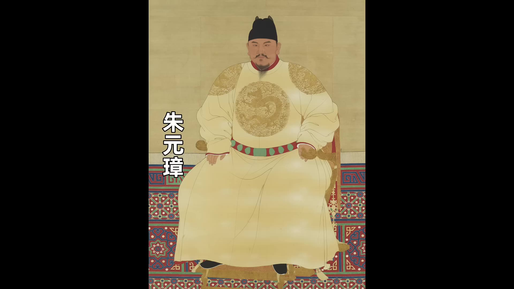
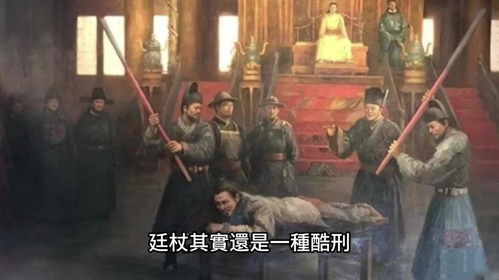
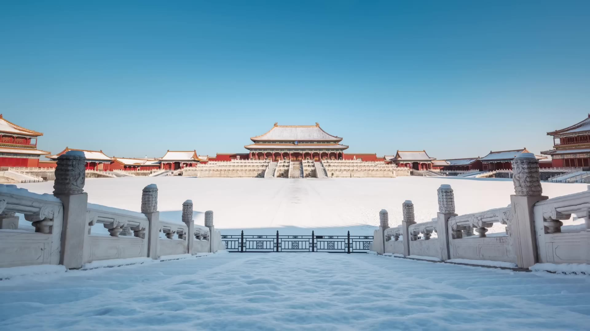
孝宗朱佑樘為數不多偶爾使用廷杖者，用後即悔，遣御醫救治，此特例在明代極為罕見。其對士大夫的關懷更體現在細節，如冬日北京積雪結冰，孝宗慮及老臣年邁，特下令凡地面結冰時即行清理，此舉展現其實踐「皇帝與士大夫共治」的理想政治狀態。此理念下，弘治朝出現劉健、謝遷、李東陽等賢臣，吏部尚書王恕、兵部尚書劉大夏、馬文升等廉潔能吏輔佐，終使朝綱振作，史稱「弘治中興」。
弘治中興表面似恢復元氣，實則僅延緩大明衰落。此因財政危機與土地兼並問題未解，孝宗雖主觀上欲抑制兼並，然其本人亦為最大土地佔有者，此矛盾終成弘治朝無法解決的深層問題。
00:10:02
弘治年間皇莊的數量劇增，包括皇帝的外戚、皇室宗親等，他們利用孝宗的仁慈瘋狂侵佔百姓土地。根據史料記載，朝廷賬面上記載的全國耕地面積為850萬頃（回誤），至弘治十五年（即109年後），朝廷賬面上的土地居然減到了420萬頃，土地減少超過了一半。這消失的一半土地並非真的消失，而是變成了不需要納稅的私產。這些私產中，最大頭是皇帝擁有的皇莊、宗室藩王擁有的莊田，以及有權有勢的宦官的侵佔。這些宦官一方面直接向皇帝索要土地，另一方面也以代皇帝管理皇莊為名義大量霸佔土地。此外，皇族外戚的影響力亦不可小觑，孝宗雖然節儉，但對外戚的賞賜「異常大方」，尤其對張皇后的家族毫不吝嗇。張皇后有兩位弟弟，其中張鶴齡尤為貪婪囂張，朝廷內臣外臣對其皆恨之入骨。張鶴齡不僅在外囂張，在宮內亦屢屢放肆，曾試戴孝宗皇冠、試圖強姦宮女，甚至遭太監何鼎追打，但孝宗始終縱容其行為。孝宗不僅給予張家人大量房屋與土地，甚至將藩王辭退的土地亦分予他們。在皇帝的縱容下，張家人有恃無恐，除皇帝賞賜之土地外，更強行兼併更多土地。
在抑制土地兼並方面，孝宗雖同意大臣提出的抑制皇莊投獻建議，但其抑制並不徹底。多次大臣建議廢除或限制莊田，孝宗均未採納，明確表示要保留皇莊作為宗室與內官的經濟支柱。因此，孝宗實行「邊收邊賜」政策，一方面收回少量莊田，另一方面因宗親與外戚之情，不斷將大量土地賜予皇親國戚。根據統計，他撥給宗親、外戚與宦官的莊田總數多達1萬多頃，尚未計算這些人強行霸佔的土地。此種情況上行下效，導致士紳官僚階層兼並土地更加嚴重，土地兼並觸及國家根本。
因不需要納稅的土地增多，能徵稅的土地自然減少。當王府或權貴佔用大量土地後，將負擔轉嫁至普通百姓，迫使其舉家逃離成為流民。流民增加導致朝廷基層統治不穩，最終明朝亡於流民。此為土地財政方面，弘治朝並未扭轉局勢，反而加重土地兼並。
國防軍事方面，弘治年間明朝主要面臨兩大威脅：北方蒙古小王子達延汗率軍頻繁越過長城南下騷擾；西北吐魯番多次出兵攻打哈密。哈密衛為明朝西面最遠的衛所，對此兩大外敵，孝宗採取消極防禦策略。對北方蒙古騷擾，孝宗主要加固長城作防守姿態，僅有名將王越主張主動出擊並取得勝果，整體軍事表現保守。對西北邊患，孝宗多用封賞與外交處理，雖曾派兵支援西北，但因路途遙遠與後勤不足，無法長期駐守，導致明朝對西北掌控力逐漸削弱。
弘治一朝軍事力量大幅下降，其中重要原因為士兵被徵調為勞工，長期缺乏操練。被詬病的「京營佔役」即為例證。京營包括三大營、十二團營等，為明朝重要軍事力量，但朝廷常用其士兵進行工程建設，如修建宮殿、城垣、陵墓等，導致士兵無暇操練，官軍戰鬥力下降。此弊政並非孝宗所創，成化年間即已存在，孝宗登基時亦曾將其列為弊政，聲稱要革除。
00:15:02
但是沒過多長時間他就又讓京營重新投入到繁重的工役。除了皇家的工程之外，他也調動京營的士兵來做其他工程，比如說修城牆、修城門這些他都讓京營士兵去做。還有由於他寵幸外戚一些皇親國戚家的工程他也讓京營士兵去完成，比如說弘治六年孝宗調撥三大營的官軍去給他的老丈人修墳，弘治十年他派京營的官軍去給他丈母娘修房子，同時他還派3,000人給重慶大長公主修墳。憲宗對於修寺廟也是情有獨鍾，他派這些士兵去修寺廟、修道觀。所以整個弘治年間土木工程就沒斷過，這些工程都由京營的官軍來做，京營官軍幾乎就沒正常進行過操練。好好的軍隊變成了工程隊，更嚴重的是這些繁重的勞動讓士兵們不堪忍受，以至於出現了大量的逃兵。弘治十三年監察御史劉芳上奏說「京師根本之地而軍士逃亡者過半」，弘治十七年監察御史劉淮上奏說「殫忠」和「效義」兩座軍捨有15,000多間用來供給官軍操練住，但是近20年從來都没用過，請求皇帝送團營來操練。20年軍捨沒住過人，士兵都在做苦工，京師之地士兵逃亡過半這種情況實在是觸目驚心。這樣的軍隊幾乎毫無戰鬥力可言，對於這種情況朝廷上大臣多次上奏請求皇帝禁止官軍佔役，但是孝宗每次都是敷衍了事從未真正改善。所以在弘治年間大明的軍事荒廢，遇到有外敵來騷擾明軍根本無法主動出擊只能消極防禦。
在財政上和軍事上弘治朝都在走下坡路，所以我們說所謂的弘治中興只是表面的中興，沒解決根本問題，它只是延緩了明朝的衰落而已。
我們知道明朝的皇帝是以有個性聞名，尤其是明朝中後期的皇帝個個都有個性，有的甚至都可以說是奇葩。明孝宗朱佑樘到現在為止我們介紹的內容看起來都還很正常，他有個性的地方是哪呢？是一夫一妻。孝宗一輩子只有張皇后一個女人，這一點在中國歷朝歷代的皇帝裡面幾乎是絕無僅有的存在。因為對於普通人來說一妻可能說他是美德，但是對於皇帝來說多納嬪妃這是關乎到國本的大事，皇帝多生皇子才是美德。當時無論是外廷的大臣還是內廷的宦官都勸孝宗多納妃子，但是孝宗始終不為所動。這裡面還有一個小故事就是孝宗剛登基的時候內閣首輔是萬安，萬安我們上期節目介紹過他平庸無能在成化年間他是靠攀附萬貴妃上位當了18年的內閣大臣，他除了攀附萬貴妃之外他也會投皇帝所好，他給當時的皇帝就是憲宗進獻房中術，憲宗對他也很滿意。孝宗登基之後萬安還是想用房中術這手本事，他就把多年來對房中術的心得寫成奏書封在小盒子裡面秘密呈給孝宗，孝宗看到之後大加斥責說「這像一個大臣做的事嗎」，這下搞得萬安無地自容。這個故事很多時候都被拿來當做孝宗即位之後澄清吏治的例子，但是我們也可以從另外一個角度來猜度一下，猜度一下跟孝宗一生只娶一個老婆放到一起，我們猜一下是不是有可能是因為孝宗的身體不允許他根本沒辦法弄什麼房中術，根本沒辦法去納更多的妃嬪。
我們上期節目講過孝宗小時候的故事，他6歲之前是被藏起來偷偷養大的，這段陰暗的經歴對他的影響可以說很深遠也很大，他身體上和心理上都受到極大的影響。身體上的影響就是孝宗身體一直都不好，維持壽命都很吃力（口誤）最終只活了36歲，所以呢我們猜測他可能根本就沒有什麼體力去搞房中術也沒那個體力去納更多的妃嬪。心理上的影響就更大了，孝宗在性格上是有弱點，由於這種懦弱導致他比較依賴張皇后不敢違拗張皇后，所以他只娶張皇后一個女人很可能並不是史書上經常說的夫妻兩人「相得甚歡」，心裡面有陰影。剛才我們說過張皇后的兩個弟弟張鶴齡和張延齡他們在皇宮裡面居然居然敢強姦宮女這種事情孝宗都能忍住不發作，可見他並不是大度而是懦弱。再舉一個例子，有一次張家兄弟的家奴在外面侵佔民田，被侵佔的人告官之後他們又操縱司法讓受害者有冤難用，這個事傳到孝宗的耳朵裡面他就派太監蕭敬去調查，蕭敬調查的結果是事情屬實，蕭敬依法懲辦了張氏的家奴。
00:20:00
蕭敬回宮復命的時候正好趕上孝宗和張皇后一起用膳，張皇后看到蕭敬
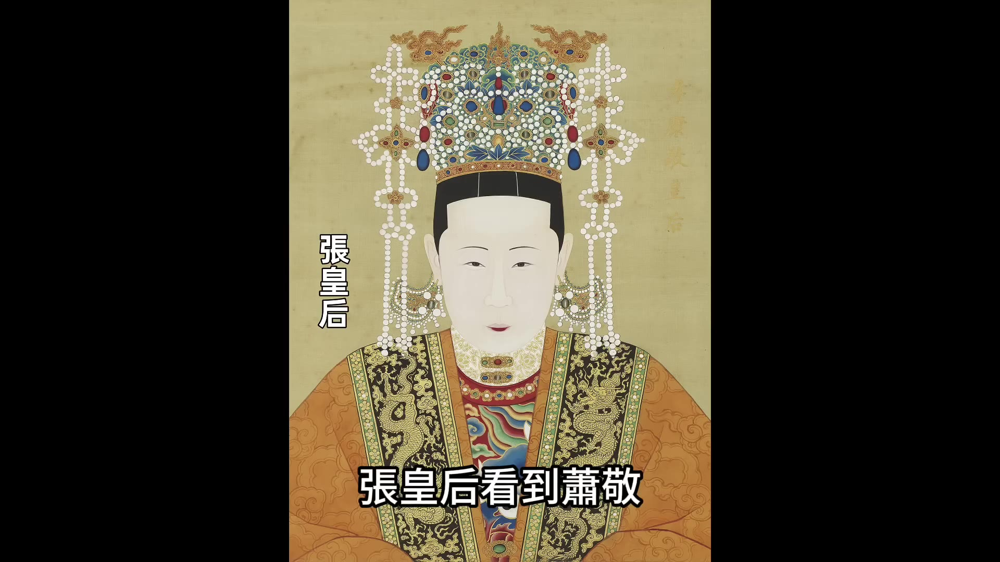
立刻把他一頓臭罵，她說外廷的那些官員們跟我們為難也就罷了，你這狗奴才也學他們的樣。張皇后一開罵，孝宗朱佑樘不僅沒替蕭敬說話，反而跟著張皇后一起罵。按理來說呀，是他派蕭敬去辦的案子，是不是他應該替蕭敬扛著點？但是在張皇后面前，孝宗居然不敢。等張皇后走了之後，孝宗把蕭敬叫到身邊，他居然給蕭敬道歉，說剛才我罵你不是我的本意，剛才我和皇后偶爾拌了幾句嘴所以遷怒於你，你不要當真。然後他還拿出50兩銀子賞賜蕭敬，說這50兩是給你壓驚的。
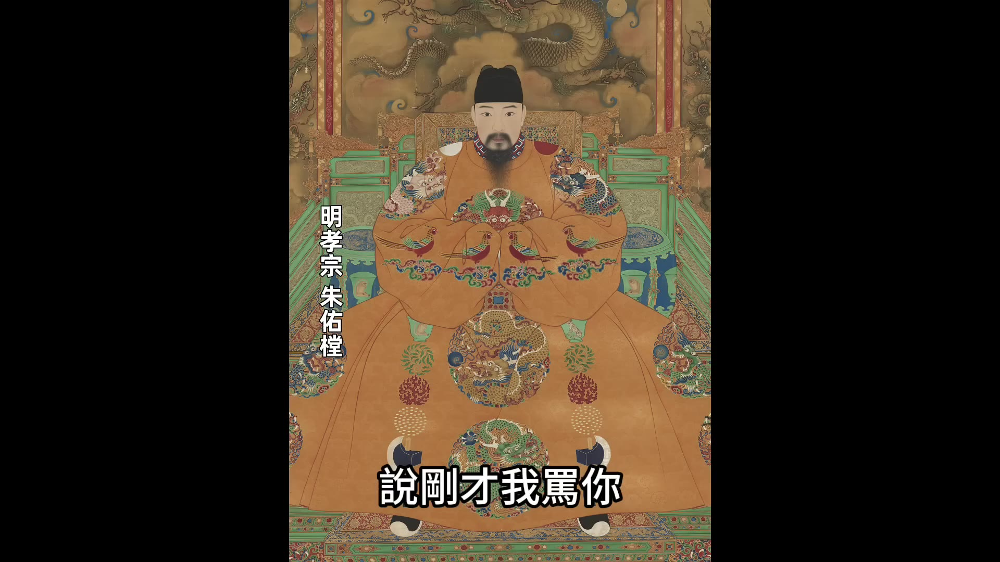
通過這幾件事就能看出來，孝宗懦弱的性格，尤其是在張皇后面前他顯得更為懦弱，甚至可以說是窩囊。這點肯定跟他小時候度過的那六年陰暗的經歴有關。
最後我們總結一下，明孝宗朱佑樘當了18年皇帝，他去世之後後世對他的評價很高，就認為比如清朝修的《明史》在明朝的16個皇帝當中除了太祖、成祖之外可以稱道的只有仁宗、宣宗和孝宗。也有人說說孝宗可以堪比漢文帝、堪比唐玄宗，這些都是歷史上被稱頌的皇帝。
孝宗為什麼會有這麼高的歷史評價？我們說最主要的原因還是他能讓國家按照中國傳統儒家的標準，最好的皇帝不是什麼金戈鐵馬，也不是開疆拓土，而是休養生息。因為金戈鐵馬也好、開疆拓土也好，都會給老百姓造成很大的負擔。能夠讓國家休養生息的皇帝是能讓老百姓過上安定好日子的皇帝，所以這樣的皇帝一般在史書裡面都會被稱頌。
孝宗也確實做到了讓老百姓休養生息，但是如果說他開創了弘治中興可能還是有點過譽，因為我們前面說過了這個所謂的中興只不過是國力上稍微有點恢復，延緩了明朝的衰落，在根本上他並沒有解決根源的問題。
好了，今天的故事就講到這裡「1921-1945年的專題歷史課程」我開通了，有興趣的朋友歡迎點擊影片下方鏈接瞭解，歡迎大家點贊關注。
00:00:01
大家好今天我們講明孝宗朱佑樘
孝宗朱佑樘在位一共18年他的年號是弘治他在位時期被稱為「弘治中興」「中興」對一個皇帝來說他的廟號是孝宗孝宗也是很高的評價『孝」這個字在中國古代不光指孝順父母還代表著一個人的個人品德非常好說一個皇帝的孝道好其實是在說這個皇帝的個人品德好然後又稱贊他把這種好的個人品德延伸到治理國家國家治理的也不錯其實在中國歷史上既能個人品德好又能治理國家治理的好的皇帝是並不多見的更常見到的是一個皇帝他的個人品德雖然好但是治理國家卻不行或者說這個皇帝的個人品德好卻被別人給幹掉了比如說朱允炆朱允炆就是公認的個人品德好但是被篡位了還有一種皇帝呢就是這個皇帝他的個人品德並不好但是治理國家卻很有本事比如說朱棣
朱棣就屬於是公認的個人品德非常不好但是國家在他手底下治理的很穩固所以孝宗既能個人品德好又能把國家治理的還不錯治理成一個弘治中興這在歷史上並不多見
不過孝宗的這個弘治中興到底是不是名副其實的真中興還是只是表面的中興中興到了什麼程度今天我們就來聊聊明孝宗的弘治中興
講孝宗之前我們先簡單回顧一下在他之前的明朝的情況
明太祖朱元璋建國之後朱元璋雖然大殺功臣但是他沒太擾民所以洪武期閒明朝的國力整體在上升明成祖朱棣篡位之後他的花銷就比較大老百姓的負擔也比較重明成祖五次親征遷都北京鄭和下西洋等等這都是大工程不過他花銷雖然大但是呢明朝整體的國防力量還是在提升的朱棣之後是仁宣之治
仁宣之治明朝的國力又逐漸恢復一直到正統年間明朝的國力都是上升狀態
到明英宗朱祁鎮土木堡之變是一個分水嶺其實明朝從建國開始一直到土木堡之變這七八十年整體來看都算是治世國力都是在上升的狀態土木堡之變英宗被俘虜幾十萬大軍全軍覆沒
雖然景帝朱祁鈺在于謙等人的輔助之下保住了大明的江山但是明朝的國力始終沒有恢復然後就是到成化一朝我們上期講的就是成化朝的憲宗朱見深對國家的治理漫不經心尤其是成化後期
朝廷上士大夫的風氣整體都呈下降的趨勢這就是孝宗朱佑樘登基之前明朝的形勢國家的整體國力沒有恢復朝廷上下的風氣也不好明朝沒有太強大的外敵他還有時間重振朝綱
孝宗登基之後一開始他很勤奮在早朝之外他又增加了一個午朝每天兩次上朝跟大臣議事我們都知道清朝的皇帝是很勤奮的明朝的皇帝勤奮的並不多明朝也就開國之初的兩個皇帝朱元璋和朱棣還比較勤奮再往後就越來越差尤其是明朝中後期以後皇帝幹正事的時間就越來越少所以孝宗能勤政這是很難得的可能也是他覺得是他父親給他留下來的攤子實在太爛需要好好的整頓整頓成化後期朝廷的風氣確實變得很差朝廷從上到下大臣都懶政內閣是紙糊三閣老六部是泥塑六尚書其他中低級的官員甚至很多都不來上朝我們說一下成化時期後來的情況成化十二年九月十五號這天負責朝廷議事的鴻臚寺官員發現上朝的官員數量明顯不足他就派人點了下數發現居然少了180多人
當時朝廷早朝皇帝一般是坐在奉天殿或者坐在華蓋殿的大殿裡面能見到皇帝的大臣都是有資格進殿的
剩下的官員都是站在從奉天門到奉天殿御道的兩邊這些中下級的官員每天上朝很難見到皇帝成化後期的早朝其實有點形式化每天天沒亮皇帝和大臣就都得起床匆匆忙忙去上朝然後一眾官員高呼萬歲沒什麼事就散朝當時早朝不怎麼議政重要的事情都是官員們回到自己的衙門辦然後用奏折呈獻給皇帝所以官員們對上朝就越來越松懈以至於到成化十二年這天鴻臚寺官員居然查出來有180多個人沒上朝
00:05:03
鴻臚寺把這個情況上奏給憲宗之後
憲宗直接說了一句話是缺朝者每人停發三個月的俸糧姑宥之，姑宥之的意思就是暫且原諒的意思只罰三個月的俸糧這是很輕的懲罰了那些膽敢不上朝的官員都是平時敢藐視法紀的他們靠權力弄的錢比俸糧要多得多所以這點懲罰對他們來說根本起不到作用這樣下去之後這種不上朝的情況就越演越烈不上朝的官員越來越多到成化十六年憲宗自己都發現上朝的官員稀稀拉拉他讓鴻臚寺再清點一下人數發現不上朝的官員竟然達到了634個按照道理來說呀憲宗這是自己主動要清理人數這下他該發怒了但是他也沒有他還是說「姑宥之』這次連俸糧都沒罰到成化十七年的時候不上朝的大臣多達1,000多人所以成化後期朝廷上的紀律都已經松懈到這種程度了大臣們懶政的情況肯定更加嚴重孝宗登基之後接手的就是這麼個爛攤子所以他即位之後在早朝之外又增加了午朝開始勤政肯定他是想扭轉朝廷的這種風氣孝宗執政之後他最大的特點就是他跟文官士大夫之間的關係比較和諧我們知道縱觀整個明朝大多數的皇帝跟土大夫之間的關係都不好甚至是對立從朱元璋開始
朱元璋搞得好像自己跟生大夫有血海深仇一樣毫不留情朱棣也是朱棣對於那些忠於朱允炆的舊臣毫不留情甚至株連十族明朝還獨創了一個廷杖這種看似文明的酷刑廷杖就是拿著大板子當眾打屁股根據傳統儒家的理念從來都是「刑不上大夫』因為士可殺不可辱這是士大夫的精神但是這些在明代都不好使明代的廷杖專打士大夫當眾打屁股廷杖其實還是一種酷刑
受廷杖的大臣輕則被打殘廢重則直接被打死行刑的人下手有輕有重是輕還是重要看太監的眼色因為皇帝一般都是讓太監去監督行刑太監會給行刑的錦衣衛一個暗號這就決定了這個受刑的大臣是死是活明朝大多數皇帝都非常愛用廷杖尤其是正德和嘉靖用的最多只有少數的一兩個皇帝很少用廷杖明孝宗朱佑樘就是一個朱佑樘偶爾用一次打完之後還很後悔他趕緊派御醫去醫治這個現象在整個明朝都是非常罕見的所以孝宗朱佑樘他跟土大夫之間的關係很和諧再分享一個孝宗跟士大夫之間的溫情的小故事
就是有一次冬天的時候北京下雪地面上結冰孝宗看到地面上結冰之後他就想那些老臣年紀大了上朝的時候要從正殿的門口走進來他們走在冰面上會不會摔倒了所以孝宗就特別下令只要地面上結冰的時候從這點就能看出來孝宗對士大夫很關愛他其實是做到了儒家思想裡面最理想的一種政治狀態就是皇帝與士大夫共同治國皇帝和士大夫共同治國這點很不容易做到尤其是在明朝不容易明朝大多數皇帝都是提防著士大夫的限制士大夫的權力明朝從開國開始就設錦衣衛設錦衣衛的目的就是為了監督士大夫監督文武百官後來又設東廠設東廠是既監督錦衣衛又監督士大夫到明憲宗成化時期的時候又設西廠設西廠還是為了監督士大夫所以明朝皇帝對士大夫很不放心他們就設置這些層層的特務機關來監督最後這些特務機關反而成為了國家最大的蛀蟲孝宗朱佑樘能信任士大夫能跟士大夫共同治國這就很不容易在他這種理念之下果然在弘治朝出現了一大批賢臣比如說劉健、謝遷、李東陽這是弘治朝著名的三閣老還有吏部尚書王恕兵部尚書劉大夏、馬文升等等這些賢臣為人廉潔、通曉政務、憂國憂民孝宗在這些賢臣的輔助之下很快就扭轉了他父親留下來的朝綱不振的局面造就了後人所說的弘治中興
弘治中興在表面上來看好像是在恢復元氣但其實實際上最多只能說是延緩了大明的衰落為什麼這麼說需要從兩個方面來看-個是國家的財政實力從財政上來看當時明朝最大的問題就是土地兼並孝宗雖然從主觀上想要抑制兼並但是他本人就是土地最大的佔有者
00:10:02
弘治年間皇莊的數量劇增包括皇帝的外戚皇室宗親他們利用孝宗的仁慈瘋狂的侵佔百姓的土地根據史料記載朝廷賬面上記載的全國耕地面積為850萬頃（回誤）到弘治十五年也就是109年後朝廷賬面上的土地居然減到了420萬頃土地減少超過了一半這消失的一半的土地並不是真的沒了而是變成了不需要納稅的私產這些私產最大頭就是皇帝擁有的皇莊和宗室藩王擁有的莊田還有有權有勢的宦官的侵佔這些宦官一方面他們會直接向皇帝索要土地另外一方面他們也利用代皇帝管理皇莊的名義大量的霸佔土地還有一個大頭就是皇族的外戚孝宗他自己雖然節儉但是他對外戚的賞賜「異常大方」尤其是對張皇后的家族他賞賜的時候毫不吝嗇孝宗皇帝唯一的皇后是張皇后張皇后有兩個弟弟一個叫張鶴齡他們兩個真是貪得無厭囂張跋扈朝廷的內臣外臣對他們都是恨之入骨張鶴齡不光在外面他很囂張他在皇宮裡面都非常放肆有一次他居然敢試戴孝宗的皇冠還有一次他試圖在宮裡面強姦宮女一個叫何鼎的太監實在氣憤不過追過去都要打他但是孝宗皇帝始終都很維護他這兩個小舅子無論他們犯再大的錯孝宗都是毫無原則的縱容孝宗還給他們分了大量的房屋和土地甚至把藩王辭退的土地也都分給他們在皇帝的縱容之下張家人有恃無恐他們除了皇帝賞賜的土地之外
還強行兼並了更多的土地在抑制土地兼並方面孝宗雖然同意過大臣們提出的要抑制皇莊投獻但是他的抑制並不徹底很多次大臣建議廢除或者限制莊田孝宗都沒同意他明確表示要保留皇莊作為宗室和內官的經濟支柱所以孝宗他是邊收邊賜一邊收回少量的莊田另外一邊呢迫於宗親之情、外戚之情他又不斷的把大量的土地賜給這些皇親國戚根據統計他撥給宗親撥給外戚和宦官的莊田總數多達1萬多頃這還沒算這些人強行霸佔的土地這種情況上行下效下面的士紳官僚階層兼並土地就更加嚴重土地兼並這是觸碰了國家的根本
因為不需要納稅的土地變多了能徵稅的土地自然就減少了當王府或者權貴佔用了大量的土地之後
轉嫁給了當地的普通百姓被迫舉家逃跑變成了流民流民一多朝廷的基層統治就不安定明朝最終就是亡於流民這是在土地財政方面弘治朝並沒有扭轉因局反而是加重了土地兼並第二個是國防軍事方面在弘治年間明朝在國防安全上主要是受到兩個方向的威脅一個是北方的蒙古小王子達延汗達延汗率領蒙古騎兵頻繁的越過長城南下騷擾
另外一個方面是西北方向的吐魯番吐魯番多次出兵攻打哈密我們知道哈密衛是當時明朝在西面最遠的一個衛所了對於這兩個外敵孝宗採取的策略是消極防禦對北方的蒙古的騷擾孝宗主要的應對手段是加固長城做防守姿態當時只有名將王越主張主動出擊並且取得過一些勝果但是整體上來說軍事上表現的很保守對西北方面的邊患孝宗更多的是用封賞和外交來處理雖然他也曾經派遣部隊去西北支援但是因為路途遙遠和後勤不足無法長期有效的駐守所以當時明朝對西北的掌控力越來越弱整個弘治一朝明朝的軍事力量都是大幅下降的軍事力量下降有一個很重要的原因就是軍隊的士兵被拉去做勞工長期缺乏操練當時最被詬病的就是「京營佔役」京營佔役就是佔用京營的士兵去做勞役京營包括三大營、十二團營等等是明朝的重要軍事力量但是朝廷卻經常用這些軍隊的士兵來進行一些工程建設比如說修建宮殿、修建城垣修建陵墓等等士兵被拉過去做勞役自然就沒有時間操練所以官軍的戰鬥力就下降的很厲害這種情況不是從孝宗開始的在孝宗前面成化年間京營佔役就已經是一項弊政孝宗剛登基的時候他在詔書裡面還把京營佔役作為一項弊政來說要革除
00:15:02
但是沒過多長時間他就又讓京營重新投入到繁重的工役除了皇家的工程之外他也調動京營的士兵來做其他工程比如說修城牆修城門這些他都讓京營士兵去做還有由於他寵幸外戚-些皇親國戚家的工程他也讓京營士兵去完成比如說弘治六年孝宗調撥三大營的官軍去給他的老丈人修墳弘治十年他派京營的官軍去給他丈母娘修房子同時他還派3,000人給重慶大長公主修墳憲宗對於修寺廟也是情有獨鍾他派這些士兵去修寺廟修道觀所以整個弘治年間土木工程就沒斷過這些工程都由京營的官軍來做京營官軍幾乎就沒正常進行過操練好好的軍隊變成了工程隊更嚴重的是這些繁重的勞動讓士兵們不堪忍受以至於出現了大量的逃兵弘治十三年監察御史劉芳上奏說京師根本之地而軍士逃亡者過半弘治十七年監察御史劉淮上奏說「殫忠』和「效義」兩座軍捨有15,000多間用來供給官軍操練住但是近20年從來都没用過請求皇帝送團營來操練20年軍捨沒住過人士兵都在做苦工京師之地士兵逃亡過半這種情況實在是觸目驚心這樣的軍隊幾乎毫無戰鬥力可言對於這種情況朝廷上大臣多次上奏請求皇帝禁止官軍佔役但是孝宗每次都是敷衍了事從未真正改善所以在弘治年間大明的軍事荒廢遇到有外敵來騷擾明軍根本無法主動出擊只能消極防禦
在財政上和軍事上弘治朝都在走下坡路所以我們說所謂的弘治中興只是表面的中興沒解決根本問題它只是延緩了明朝的衰落而已
我們知道明朝的皇帝是以有個性聞名尤其是明朝中後期的皇帝個個都有個性有的甚至都可以說是奇葩明孝宗朱佑樘到現在為止我們介紹的內容看起來都還很正常他有個性的地方是哪呢是一夫一妻孝宗一輩子只有張皇后一個女人這一點在中國歷朝歷代的皇帝裡面幾乎是絕無僅有的存在因為對於普通人來說一妻可能說他是美德但是對於皇帝來說多納嬪妃這是關乎到國本的大事皇帝多生皇子才是美德當時無論是外廷的大臣還是內廷的宦官都勸孝宗多納妃子但是孝宗始終不為所動這裡面還有一個小故事就是孝宗剛登基的時候內閣首輔是萬安萬安我們上期節目介紹過他平庸無能在成化年間他是靠攀附萬貴妃上位當了18年的內閣大臣他除了攀附萬貴妃之外他也會投皇帝所好他給當時的皇帝就是憲宗進獻房中術憲宗對他也很滿意孝宗登基之後萬安還是想用房中術這手本事他就把多年來對房中術的心得寫成奏書封在小盒子裡面秘密呈給孝宗孝宗看到之後大加斥責說這像一個大臣做的事嗎這下搞得萬安無地自容這個故事很多時候都被拿來當做孝宗即位之後澄清吏治的例子但是我們也可以從另外一個角度來猜度一下猜度一下跟孝宗一生只娶一個老婆放到一起我們猜一下是不是有可能是因為孝宗的身體不允許他根本沒辦法弄什麼房中術根本沒辦法去納更多的妃嬪
我們上期節目講過孝宗小時候的故事他6歲之前是被藏起來偷偷養大的這段陰暗的經歴對他的影響可以說很深遠也很大他身體上和心理上都受到極大的影響身體上的影響就是孝宗身體一直都不好他維持壽命都很吃力（口誤）最終只活了36歲所以呢我們猜測他可能根本就沒有什麼體力去搞房中術也沒那個體力去納更多的妃嬪心理上的影響就更大了孝宗在性格上是有弱點由於這種懦弱導致他比較依賴張皇后不敢違拗張皇后所以他只娶張皇后一個女人很可能並不是史書上經常說的夫妻兩人「相得甚歡」心裡面有陰影剛才我們說過張皇后的兩個弟弟張鶴齡和張延齡他們在皇宮裡面居然居然敢強姦宮女這種事情孝宗都能忍住不發作可見他並不是大度而是懦弱再舉一個例子有一次張家兄弟的家奴在外面侵佔民田被侵佔的人告官之後他們又操縱司法讓受害者有冤難用這個事傳到孝宗的耳朵裡面他就派太監蕭敬去調查蕭敬調查的結果是事情屬實蕭敬依法懲辦了張氏的家奴
00:20:00
蕭敬回宮復命的時候正好趕上孝宗和張皇后一起用膳張皇后看到蕭敬
立刻把他一頓臭罵她說外廷的那些官員們跟我們為難也就罷了你這狗奴才也學他們的樣張皇后一開罵孝宗朱佑樘不僅沒替蕭敬說話反而跟著張皇后一起罵按理來說呀是他派蕭敬去辦的案子是不是他應該替蕭敬扛著點但是在張皇后面前孝宗居然不敢等張皇后走了之後孝宗把蕭敬叫到身邊他居然給蕭敬道歉說剛才我罵你
不是我的本意剛才我和皇后偶爾拌了幾句嘴所以遷怒於你你不要當真然後他還拿出50兩銀子賞賜蕭敬說這50兩是給你壓驚的通過這幾件事就能看出來孝宗懦弱的性格尤其是在張皇后面前他顯得更為懦弱甚至可以說是窩囊這點肯定跟他小時候度過的那六年陰暗的經歴有關最後我們總結一下明孝宗朱佑樘朱佑樘當了18年皇帝他去世之後後世對他的評價很高就認為比如清朝修的《明史》在明朝的16個皇帝當中除了太祖、成祖之外可以稱道的只有仁宗、宣宗和孝宗也有人說說孝宗可以堪比漢文帝堪比唐玄宗這些都是歷史上被稱頌的皇帝孝宗為什麼會有這麼高的歷史評價我們說最主要的原因還是他能讓國家按照中國傳統儒家的標準最好的皇帝不是什麼金戈鐵馬也不是開疆拓土而是休養生息因為金戈鐵馬也好開疆拓土也好都會給老百姓造成很大的負擔能夠讓國家休養生息的皇帝是能讓老百姓過上安定好日子的皇帝所以這樣的皇帝一般在史書裡面都會被稱頌孝宗也確實做到了讓老百姓休養生息但是如果說他開創了弘治中興可能還是有點過譽因為我們前面說過了這個所謂的中興只不過是國力上稍微有點恢復延緩了明朝的衰落在根本上他並沒有解決根源的問題好了今天的故事就講到這裡「1921-1945年的專題歷史課程」我開通了
有興趣的朋友歡迎點擊影片下方鏈接瞭解歡迎大家點贊關注
已核實
劉健、謝遷、李東陽確為弘治朝同時任職的大學士（內閣輔臣），與影片「弘治三閣老」之說相符— 明史・列傳・徐溥傳（卷一百八十一，段9102）將「徐溥 丘濬 劉健 謝遷 李東陽 王鏊 劉忠」並列為同一傳中的弘治朝閣臣群體；后妃一・英宗孝莊錢皇后傳（段5603）與孝肅周太后傳（段5607）兩處分別記載孝宗曾親自召見「大學士劉健、謝遷、李東陽」商議喪葬禮制事宜，確認三人確實同朝任大學士、且共同參與朝政決策，與影片一致。✅
未能獨立核實
- 弘治年間全國耕地面積帳面記載為850萬頃、到弘治十五年減至420萬頃的具體數字（本次以「天下田土」「洪武二十六年田」等檢索詞查詢明史食貨志相關記載均未直接命中，這類田賦統計數字通常需要在明史・食貨志一・田制的specific段落中查找，本次檢索詞選擇未能定位，不代表數字有誤）- 張皇后之弟張鶴齡試戴孝宗皇冠、意圖非禮宮女，太監何鼎欲加以阻止一事的確切記載- 孝宗因與皇后拌嘴遷怒蕭敬、後以50兩銀子賠罪安撫的具體記載- 「《明史》認為明朝16帝中除太祖、成祖外只有仁宗、宣宗、孝宗值得稱道」這一概括性評價的確切出處（本次未查證這是否為明史原文的直接表述，或是後世史家對明史各帝本紀評語的歸納轉述）